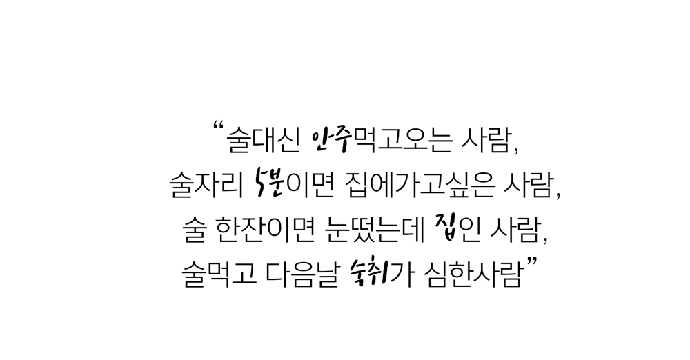
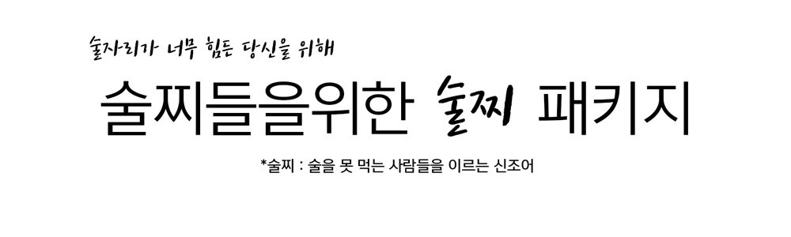
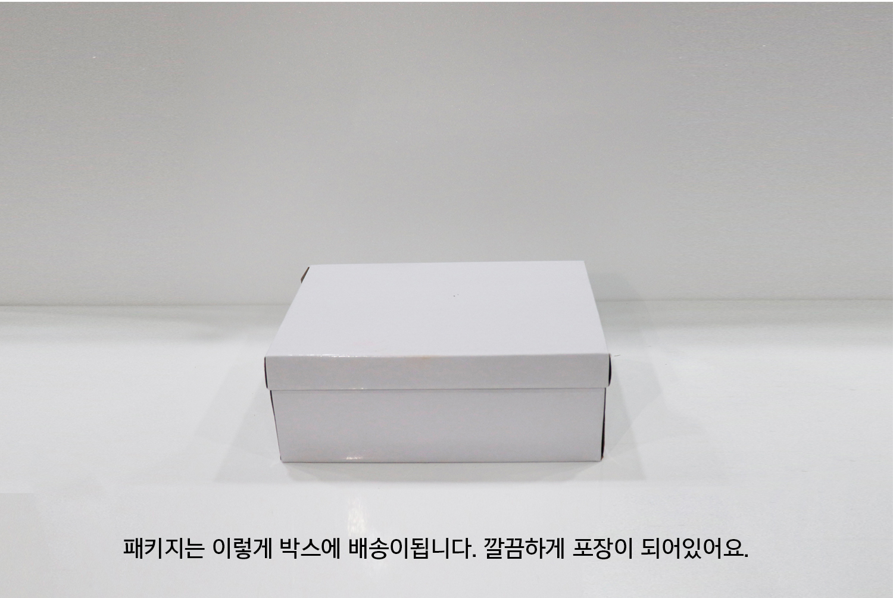
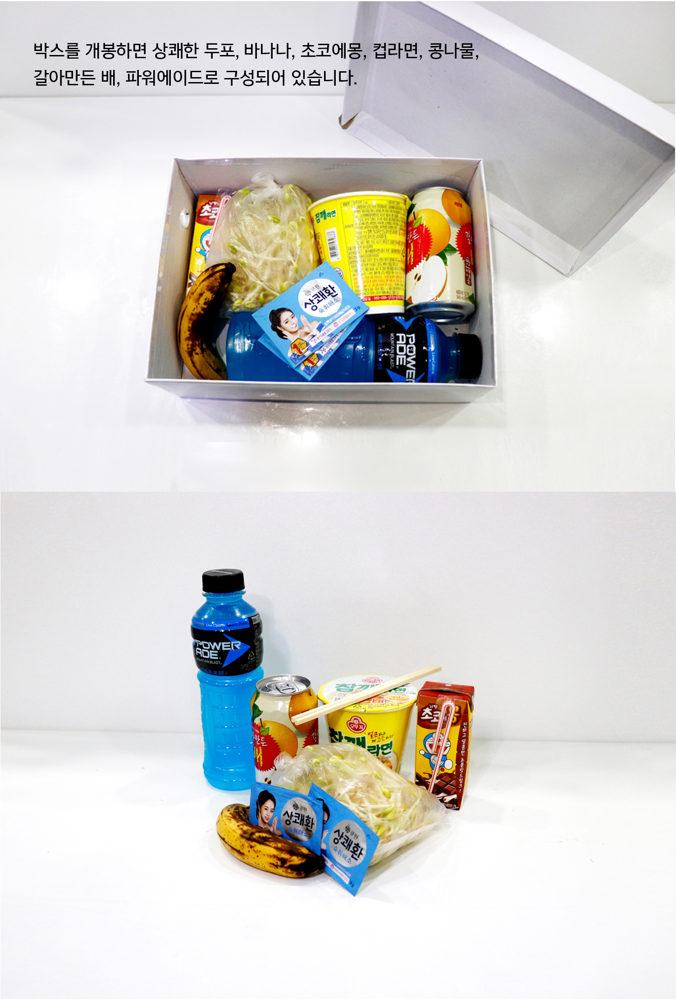
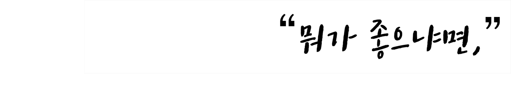

주의사항
상품수령 후 빠른 섭취를 바랍니다.
상품설명

잘 먹지는 않아도 사라지지는 말자, 응?

숙취해서 음료나 약품을 많이 팔긴하지만 먹어도 효과가 없는 경우도 많고
효과가 있어도 다음날의 갈증은 어쩔 수 없는 것을 많이 경험해온
판매자가 술을 먹기 전 부터 그 다음날까지를 책임져 줄.
구지 매번 편의점에 가서 사지 않아도 될 패키지를 구성하였습니다!
술자리, 5분컷인 술찌분들 술찌패키지 추천합니다^~^
  바나나
비타민C가 가득들어 해독작용에 매우 탁월하다.
큐원 상쾌한 숙취해소
효모추출물 24%
헛개나무열매 5%
초코우유
간을 해독을 할 떄 우리몸에 있느 당을 이용해서 해독을 한다. 그래서 몸의 당이 떨어지면 해독도 더뎌지고 몸도 금방 피로해지기 떄문에 숙취가 있는 중에는 당을 계속적으로 충당해주어야 한다.
갈아만든 배
idh(외국인들이 '배를'idh로 읽어서 한동안 idh를 찾아헤맸다고 한다.)로 휴명해진 갈아만든 배. 외국인들이 한번 먹어보고 숙취해소에 너무 효과가 좋다고 찬사하던 음료.
콩나물
바나나와 마찬가지로 비타민C가 많이들어있어 활성산소를 제거해주는 해독작용에 탁원하다.
파워에이드
술을 먹을때 끊임없이 수분을 섭취해 주어야 하는데 이떄 이온음료를 마셔주면 체내 수분보충에 좋다.
컵라면
술먹은 다음날은 해장이 꼭 필요한 법. 해장에는 얼큰하고 시원한 라면만한게 없다. 같이 들어있는 콩나물을 넣어먹으면 해장 끝.
"술자리 피할수 없으면,
똑똑하게 즐기세요 :-)"